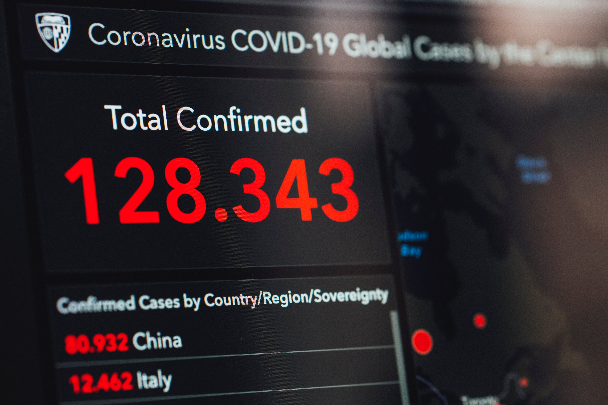

News

JAMAICA BORDERS CLOSED
He announced the date after first moving five resolutions that led to the revocation of the states of emergency (SOEs) effective Monday, August 17. The emergency measure has been in force in six parishes and several police divisions for up to two years. The prime minister had earlier committed not to call the election while the SOEs were still in place and he assured the House that the police and military have already devised measures to ensure that the Jamaican.

FLOW LAUNCH FREE FRIDAY'S
He announced the date after first moving five resolutions that led to the revocation of the states of emergency (SOEs) effective Monday, August 17. The emergency measure has been in force in six parishes and several police divisions for up to two years. The prime minister had earlier committed not to call the election while the SOEs were still in place and he assured the House that the police and military have already devised measures to ensure that the Jamaican.

JAMAICA GOING PAPER-LESS
He announced the date after first moving five resolutions that led to the revocation of the states of emergency (SOEs) effective Monday, August 17. The emergency measure has been in force in six parishes and several police divisions for up to two years. The prime minister had earlier committed not to call the election while the SOEs were still in place and he assured the House that the police and military have already devised measures to ensure that the Jamaican.
Sports
JAMAICA HOST 1st I'NTL FIGHT
He announced the date after first moving five resolutions that led to the revocation of the states of emergency (SOEs) effective Monday, August 17. The emergency measure has been in force in six parishes and several police divisions for up to two years. The prime minister had earlier committed not to call the election while the SOEs were still in place and he assured the House that the police and military have already devised measures to ensure that the Jamaican.

4 X 100M RECORD BROKEN!
He announced the date after first moving five resolutions that led to the revocation of the states of emergency (SOEs) effective Monday, August 17. The emergency measure has been in force in six parishes and several police divisions for up to two years. The prime minister had earlier committed not to call the election while the SOEs were still in place and he assured the House that the police and military have already devised measures to ensure that the Jamaican.
PORTMORE OPEN NEW GYM
He announced the date after first moving five resolutions that led to the revocation of the states of emergency (SOEs) effective Monday, August 17. The emergency measure has been in force in six parishes and several police divisions for up to two years. The prime minister had earlier committed not to call the election while the SOEs were still in place and he assured the House that the police and military have already devised measures to ensure that the Jamaican.
Government
PNP TAKES JLP TO COURT
He announced the date after first moving five resolutions that led to the revocation of the states of emergency (SOEs) effective Monday, August 17. The emergency measure has been in force in six parishes and several police divisions for up to two years. The prime minister had earlier committed not to call the election while the SOEs were still in place and he assured the House that the police and military have already devised measures to ensure that the Jamaican.
"STATE OF EMERGENCY"
He announced the date after first moving five resolutions that led to the revocation of the states of emergency (SOEs) effective Monday, August 17. The emergency measure has been in force in six parishes and several police divisions for up to two years. The prime minister had earlier committed not to call the election while the SOEs were still in place and he assured the House that the police and military have already devised measures to ensure that the Jamaican.

J.D.F NEW RECRUITS
He announced the date after first moving five resolutions that led to the revocation of the states of emergency (SOEs) effective Monday, August 17. The emergency measure has been in force in six parishes and several police divisions for up to two years. The prime minister had earlier committed not to call the election while the SOEs were still in place and he assured the House that the police and military have already devised measures to ensure that the Jamaican.
More...

VACATION UNDER THE SUNSET
He announced the date after first moving five resolutions that led to the revocation of the states of emergency (SOEs) effective Monday, August 17.
STAY HOME! STAY INSIDE!
He announced the date after first moving five resolutions that led to the revocation of the states of emergency (SOEs) effective Monday, August 17.
AGRI-GRO PRODUCTION
He announced the date after first moving five resolutions that led to the revocation of the states of emergency (SOEs) effective Monday, August 17.